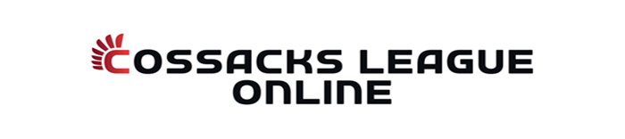

Cossacks League Online
Новини
Про нас
Правила турнірів
Галерея
Архів
Контакт
Ласкаво просимо до Cossacks League Online!
Оберіть лігу, яка вас цікавить:
Найкраща 8 світу
Ліга аматорів
Ліга для всіх
Кубок CLO